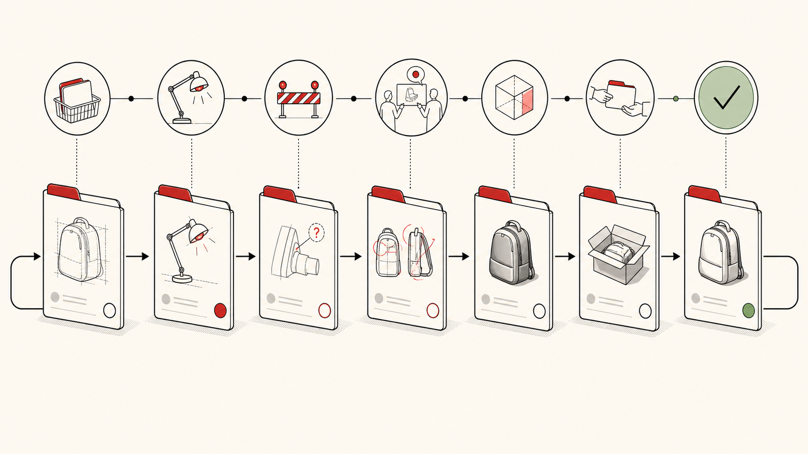
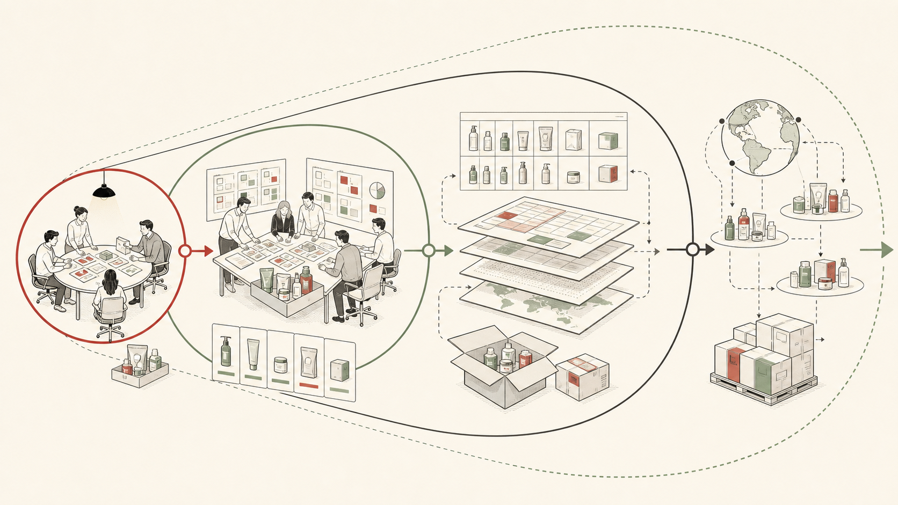
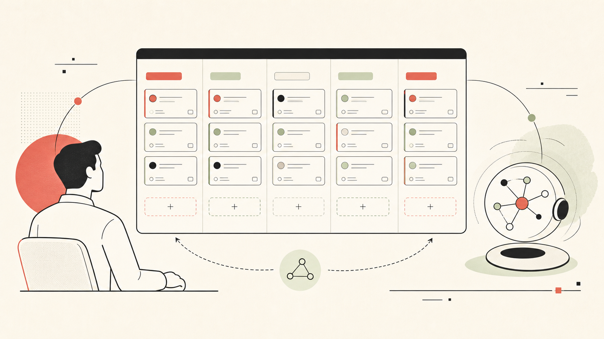

Visible Work
Active product work is readable from the board without reconstructing status from memory.
Westfield Outdoors | Stage 1 Operating Model
A practical card-based workflow for visible work, clear ownership, better handoffs, and useful AI-supported operating data.
The Operating Goal
Industrial Design and Engineering need a workflow that reflects real physical product work: leadership requests, retailer needs, factory constraints, sample timing, cost feedback, and shifting priorities.
Active product work is readable from the board without reconstructing status from memory.
Each card shows who has the work now, what action is required, and where it goes next.
Teams move work with the right files, decisions, blockers, and definition of done.
Current Friction
Risk
Priorities become visible to some people but not everyone. Ownership is implied. Blockers appear late. Weekly reporting becomes status reconstruction.
Every active card needs a clear next action, blocker, or decision request.
Cards move because ownership, state, or required action changed.
Comments, attachments, labels, and checklists create a record that humans and AI agents can use.
Physical Workflow Model
If every project were a paper brief in a folder, the same questions would still drive the system.
The current owner or owner group is explicit.
The next action is visible before review starts.
Missing inputs, samples, decisions, or files are named.
Handoff conditions are clear before the card moves.
Card Path
Critical path becomes visible when the board shows where the card is sitting, what it needs, and who can move it.

Not Agile Theater
Visible work, smaller pieces, frequent review, blocker surfacing, WIP discipline, and improvement based on real friction.
Strict two-week commitments for all work, story points as the primary system, mandatory standups, and unused custom fields.
A Kanban-style workflow with selected Agile habits that fit samples, factories, testing, and leadership decisions.
Principle
The goal is to make product-development workflow better, especially when priorities shift.
Exploration vs. Execution
Physical samples, CAD, engineering time, technical packs, and factory effort create evidence. The workflow should protect that learning while still allowing weak ideas to die quickly.
Sketching, directional concepting, and early reviews can move fast and stop fast.
Once the work consumes engineering, sample, factory, or tooling effort, the next stage needs a clear finish or stop decision.
A sample can prove cost, reveal overbuild, support value engineering, or show why an idea cannot meet target.
Practical Flow
The card has enough information for someone to begin.
The work is active, or the blocker and needed input are named.
The output, decision, or next owner is attached or linked before the card moves on.

Useful Data, Not Decorative Data
Recent S28 cleanup showed the risk: custom fields that are unused, inconsistent, or reduced to repeated historical values are noise. Workflow data should help decisions.
State and ownership.
Categories, channels, brands, and useful filters.
Source documents, photos, specs, CAD, and SharePoint links.
Decisions, blockers, handoff notes, and context.
Agent-Ready Surface
Agents can summarize activity, identify follow-ups, support reporting, and prepare retrospectives, but only if the board itself is consistent.

Decision Request
This is not a company-wide Agile rollout. It is a focused workflow system for visible work, clear ownership, better handoffs, useful retrospectives, and agent-supported reporting.
Finalize real work states, card standards, and handoff rules.
Use the board as the operating surface for active ID and Engineering-touching work.
Use blockers, handoff friction, and retrospectives to update the workflow.